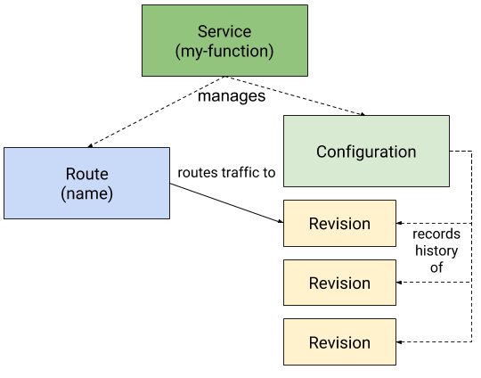
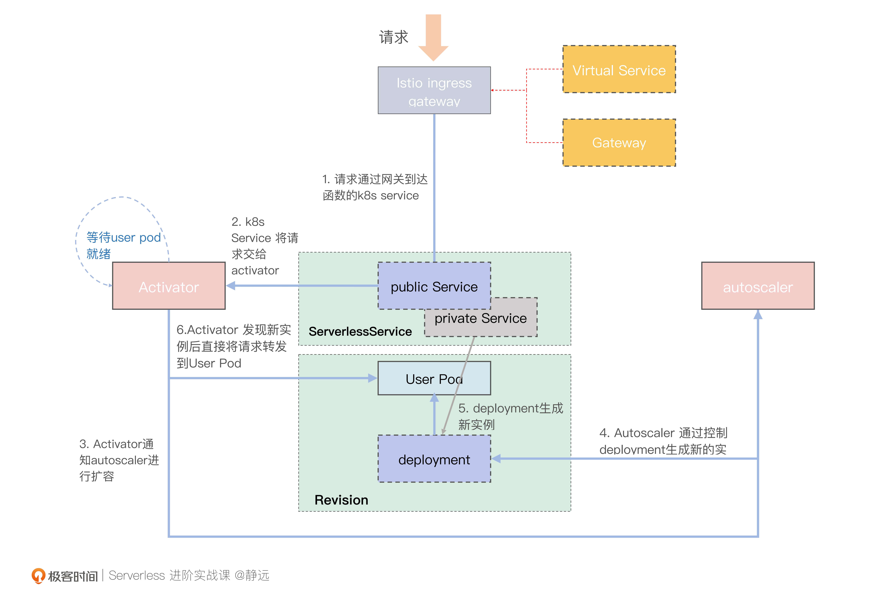
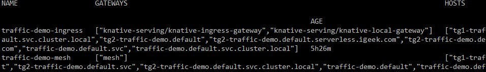
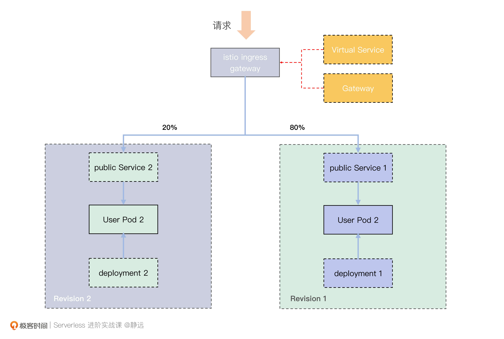
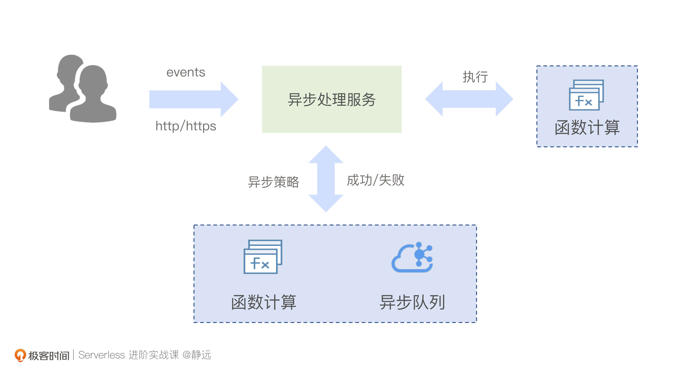
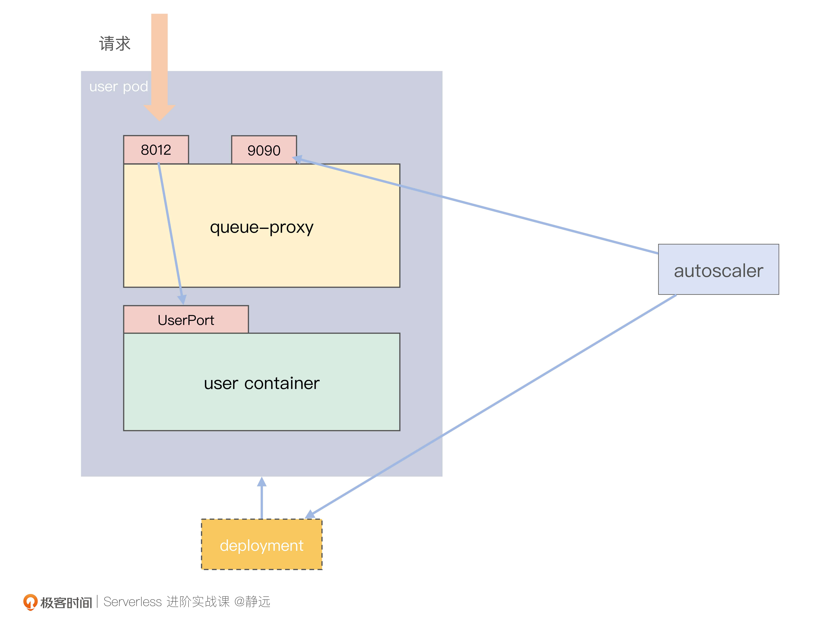

- 00 开篇词 Serverless是降本增效浪潮下的必然选择.md.html
- 00 思维构建 如何在新赛道下进阶Serverless能力？.md.html
- 01 生命周期：函数计算的基本流程是如何执行的？.md.html
- 02 触发器：如何构建事件源与函数计算的纽带？.md.html
- 03 高级属性：应对生产级别的应用，你需要掌握哪些技能？.md.html
- 04 冷启动：如何加快函数的第一次调用过程？.md.html
- 05 扩缩容：如何应对流量的波峰波谷？.md.html
- 06 流量转发：函数在不同情形下是如何执行的？.md.html
- 07 运行时（上）：不同语言形态下的函数在容器中是如何执行的？.md.html
- 08 运行时（下）：不同语言形态下的函数在容器中是如何执行的？.md.html
- 09 小试牛刀（一）：如何利用函数之间的调用解决业务问题？.md.html
- 10 小试牛刀（二）：如何突破VPC网络的速度限制？.md.html
- 11 WebIDE：如何让函数远离繁琐的本地开发模式？.md.html
- 12 编排：如何协调多任务的运行？.md.html
- 13 可观测（上）： 如何构建多维度视角下的Serverless监测体系？.md.html
- 14 可观测（下）： 如何构建多维度视角下的Serverless监测体系？.md.html
- 15 选型：不同阶段的数据应如何存储？.md.html
- 16 动手体验（一）：如何实现业务高效率地开发上线？.md.html
- 17 动手体验（二）：如何在云函数场景下实现一个有状态的服务？.md.html
- 18 实战指南：Serverless沙场老兵的一线使用经验.md.html
- 19 实战进阶（一）：Serverless “连接器” 的能力到底有多大？.md.html
- 20 实战进阶（二）：如何基于智能音箱开发一个BOT技能？.md.html
- 21 实战进阶（三）：传统的服务如何迁移到Serverless平台？.md.html
- 22 私有云：赛马时代的Serverless核心引擎谁能胜出？.md.html
- 23 实战进阶（四）：如何从0到1进阶一个开源引擎？.md.html
- 24 实战进阶（五）：如何从Serverless引擎蜕变成一个Serverless平台？.md.html
- 结束语 在实战中把握事物本质，不断革新.md.html
- 捐赠
06 流量转发：函数在不同情形下是如何执行的？
你好，我是静远。
在前面的课程中，我跟你分享了函数实例的冷启动和扩缩容，这两个点是Serverless的核心特征。可以说，提到Serverless必然会提到冷启动和扩缩容。但你是否想过，是什么促使Serverless的函数实例从0到1，从1扩容到N，又从N缩容到0的呢？
这正是我本节课程要跟你分享的主题——流量机制。确切地说，是流量在这些情形下的转发机制。希望通过这节课，你能够了解Serverless在冷热启动、常规流量升降、异步请求、多并发等不同情形下流量的转发过程，并在脑海中构筑出一幅Serverless的全链路流量转发拓扑图。
这节课，我选择了Knative作为开源的Serverless引擎框架，来介绍冷启动和分流机制的流量转发。至于详细的开源引擎的分析、以及开源引擎私有化整体解决方案，我会在第三模块实战进阶中跟你详细探讨。
知识储备
在讲流量转发之前，我们先来回顾一下Knative，它主要包括Eventing、Serving，Build三大组件，其中Build现在已经被tektoncd/pipeline替代。这三大组件中，跟我们主题相关的主要是分管流量的Serving组件。
Knative Serving定义了一组特定的对象，使用Kubernetes CRD的方式来实现这些对象。我们看一张Knative官方简单示意图：

当用户创建一个Knative Service的时候，它的Controller会自动创建对应的Route和Configuration资源，其中Configuration就对应了我们关于业务代码的镜像配置，每次Configuration修改后，就会创建出对应的Revision版本。
Revision则代表某一时刻的Configuration的快照，每个Revision会拥有一个自己的Deployment，如果流量策略定义了转发给不同的Revision，那么实际上，就是转发给这些Revision的Deployment。
图中的Route继承了Service中的流量策略的相关配置，也会决定请求的流量转发走向。如果Service中没有定义相关流量策略的话，那么就是默认所有流量转发给最新的Revision。
流量转发
有了Knative Serving基本概念的知识储备，我们就可以开始从流量的入口说起了。
入口流量
入口的网关层面，Knative从设计之初就考虑到了扩展性的问题，通过抽象出Knative Ingress资源来对接不同的网络扩展。一般来说，我推荐使用Kourier、Istio、Contour这三种来做对接。如果我们的 Knative使用了Istio作为网络组件，那么外部流量就会传给 istio-ingressgateway，它会根据 Knative Serving 创建的 VirtualService，并结合Gateway来决定把流量转发给哪个用户 Service。
那么Gateway和VirtualService具体的角色和协作方式是什么样子的呢？我们一起看一下。
- Gateway：用于暴露对外服务的端口和域名，决定了哪些流量是可以经过的。比如下面这个例子定义的是访问域名jy.geekbang.com且指定80端口的流量可以经过这个Gateway。
apiVersion: networking.istio.io/v1alpha3
kind: Gateway
metadata:
name: jy-gateway
spec:
selector:
app: istio-ingressgateway
servers:
- port:
number: 80
name: http
protocol: HTTP
hosts:
- jy.geekbang.com
- VirtualService：用于配置流量的路由，类似 Nginx 的 Server 配置，通过和Gateway关联，来决定流量的最终去处。这里我也给你一个示例，结合上面的Gateway，这里表示的是从上面网关过来的流量最终会发往jy-demo-v1.default.svc.cluster.local。
apiVersion: networking.istio.io/v1alpha3
kind: VirtualService
metadata:
name: jingyuan-vs
spec:
hosts:
- jy.geekbang.com
gateways:
- jy-gateway
http:
- route:
- destination:
host: jy-demo-v1.default.svc.cluster.local
冷启动的流量转发
下面我们来看一下Knative的冷启动情况下，流量是如何被处理的。

这里需要说明一下，为了方便你专注于冷启动的转发过程，我将一些不涉及到流量部分的交互暂时去掉了，比如ServerlessService的模式转变，AcutoScaler指标上报等。
另外，图中我针对不同对象资源做了颜色和线条的区分。其中，所有的实线矩形都表示Pod对象，也就是具体处理请求的进程，而虚线矩形则代表非Pod类型的其他资源对象。
这里，我们着重介绍图里的Public Service和Private Service，它们是决定流量走向Pod IP还是Activator的关键。我们来分别看一下。
- Public Service：由Knative管控，其EndPoints是可变的。如果当前的Revision存在User Pod，那么Public Service的EndPoints会与Private Service的保持一致，指向这些实例；而如果不存在User Pod，那么冷启动流程时，其EndPoints将指向Activator的IP地址。
- Private Service：通过Label Selector 来筛选图中对应的Deployment产生的User Pod，其他组件可以通过监听 Private Service的EndPoints情况，来了解当前的Revision是否有User Pod存在。因为其本身不做流量的转发，所以我在图中用灰色体现。

了解了冷启动流程图中每一个区块的含义，我们再来对照着图片了解一下冷启动的实际请求流向。
步骤0：这里要完成的是准备工作。当你打包好函数镜像，创建好Knative Service之后，Knative会根据定义来创建Route、Configuration（cfg）资源，然后cfg会创建对应的Revision版本。Revision又会创建Deployment提供服务。
步骤1：当请求到达Istio Ingress Gateway后，Istio Ingress Gateway会根据Gateway和virtualService配置信息，将请求转发给Public Service。
步骤2：由于此时集群中还没有User Pod（图中的User Pod需要等到AutoScaler扩容后才有），而Public Service的EndPoints配置的是Activator，所以请求接下来会交给Activator处理。
步骤3：Activator会将收到的请求暂存，同时统计请求对应Revision的实际流量并上报给AutoScaler。另外，Activator还会不断监听Private Service，检查是否已经存在User Pod 了。
步骤4：AutoScaler根据流量情况控制对应Revision的Deployment来实现User Pod的扩容。在冷启动过程中，会至少保证创建一个Pod出来。
步骤5：Deployment创建新的User Pod，同时会更新Private Service的EndPoints，将Private Service的EndPoints指向新生成的User Pod。
步骤6：Activator检测到Private Service关联的EndPoints后，会将请求直接转发到新的User Pod。User Pod收到请求后，就会执行业务逻辑。
其实在从0到1的过程中，还有一点需要说明的，那就是在User Pod创建成功后，AutoScaler会触发SKS的模式为serve，同时将Public Service的EndPoints同步为Private Service的Endpoints，也就是切换回了常规流量的处理模式。而新的流量到来后，就会通过Public Service直接到达User Pod，不再走Activator代理。
但Knative本身引入了一个TBC（Target Burst Capacity）来控制什么情况下Activator会从流量路径中摘除，这样做的好处是为了防止流量突然的增大，导致单个Pod失衡，进而影响到请求的丢失。
这就是Knative在冷启动下的流程机制，我们可以看出，Knative针对流量从0到1的启动过程，考虑到了流量的突增的因素，在流量入口，考虑到了便捷的扩展能力，能够更好地复用网络组件。
那么，他又是怎么基于已有的网络组件快速做到流量的治理，做到小流量上线的呢？
流量分流机制
我们在知识储备中了解到，Service负责创建Route、Configuration 以及 Revision 资源，通过 Service 可以将流量路由到指定的 Revision中。而在指定的过程中，分流的核心是Route，它负责把网络端点映射到一个或多个 Revision，可以通过多种方式管理流量，包括灰度流量和重命名路由。
首先来看一个普通的 Knative Service 定义，该 Knative Service 下有两个版本，分别是 Revision traffic-demo-v1、traffic-demo-v2，流量策略按80:20的比例路由到不同 Revision，tag 分别是 tg1 和 tg2。其中流量策略定义如下所示：
traffic:
- tag: tg1
revisionName: traffic-demo-v1
percent: 80
- tag: tg2
revisionName: traffic-demo-v2
percent: 20
在 Knative Service 部署到 default namespace 后，Knative 就会创建 Route 对象，因为我们的 Knative 用了 Istio 作为网络组件，所以还会继续创建 Istio VirtualService（traffic-demo-ingress）。
在图中，你可以看到第一个 VirtualService 关联了 Knative 创建的两个 Gateway，第二个关联的 Gateway 是 “mesh”，这是 Istio 保留的一个关键字，意思是将 VirtualService 的规则应用到集群里所有的 sidecar，这里我们可以先忽略它。

我们看一下traffic-demo-ingress的路由生成，由于配置信息量比较大，我将route相关的部分列了出来，方便你更清晰地查阅：
route:
- destination:
host: traffic-demo-v1.default.svc.cluster.local
port:
number: 80
headers:
request:
set:
Knative-Serving-Namespace: default
Knative-Serving-Revision: traffic-demo-v1
weight: 80
- destination:
host: traffic-demo-v2.default.svc.cluster.local
port:
number: 80
headers:
request:
set:
Knative-Serving-Namespace: default
Knative-Serving-Revision: traffic-demo-v2
weight: 20
你可能会想，destination 的host格式为什么要命名为：traffic-demo-v1.default.svc.cluster.local。
这里我简单提一下，这种命名本身就是Kubernetes Service的DNS的名字，是Kubernetes内部使用的名称。名称的组成规则是
在Knative中，我们通常可以通过修改config-domain的配置来自定义一个域名后缀，使得外部请求的时候可以访问。再由istio ingress gateway根据virtualService 中配置的这些策略实现分流，最终实现下图的效果。

在小流量/灰度的发布上，开源的引擎框架Knative就是这样做的了。但云厂商可能由于平台的完备性，具备专门的自研小流量实验基建的服务能力，一般也会基于流量的抽样落点来进行。
常用功能点
在上面的内容中，我们从流量入口着手，了解了Serverless引擎在冷启动和小流量下的流量转发机制。那么，云厂商在流量转发上还有哪些加持呢？我们可以聊聊平时常用的两个功能点：异步调用和单实例多并发下的流量转发机制。
异步下的流量调度
我们从前面已经了解到，同步的调用请求可以通过路由功能进行分流，那么异步和它有什么样的不同呢？
一些离线任务往往适合从同步流程中剥离出来，进行异步处理。比如像日志清洗、定时触发、音视频处理等等。目前主流的函数计算平台都提供了函数的异步处理能力。
用户通过异步接口的API主动发起，在异步调用函数时，你不需要等待函数代码的响应，只要把这次请求交给平台侧处理就可以了。当然，更多的场景通常是结合各类异步触发器来使用。比如我们之前学到的对象存储触发器，通过设置好存储桶Bucket和存储对象的匹配规则，就可以简单快捷地实现音视频转码以及ETL等业务逻辑的处理。

这里，我们可以简单说一下异步下的流量调度过程。
请求首先会到达异步处理模块，并按照顺序排队，这也是异步处理模块通常会结合消息队列实现的原因。当轮到你的请求被处理时，异步处理服务会再将请求发到对应的函数实例进行执行，并将执行结果反馈到你配的监控日志上。除此之外，像AWS、阿里等主流的函数计算平台还会支持异步的执行策略，你可以根据每次异步执行的最终结果来配置“执行成功”和“执行失败”的下游服务。
总的来说，异步调用主要通过事件/消息队列的方式来缓冲一步，然后通过异步处理模块，按照同步请求的请求机制来处理。流量的转发除了在入口处不一样之外，后续的同步请求依然跟上面类似。
多并发下的流量转发
下面我们再来看请求在单实例多并发下的流量调度过程。
先看两个概念：
- QPS，函数实例Pod每秒可以响应的请求数；
- 并发数，同一时刻函数实例Pod接收的请求数。
从这两个概念中我们能够发现，并发数的增加并不一定会导致QPS增加。达成了这个共识之后，我们再来看一下函数计算的并发实现需要注意哪些要点。
首先，你需要是HttpServer的服务类型。
如果你是基于云厂商的标准运行时，就需要看一下他是否支持。我会在运行时这节课里给你分析关于GoLang Runtime的代码片段，当请求到来时，除了以HttpServer的形式运行之外，还会通过go func的形式进行处理，这种方式可以从一定程度上进一步提升函数的并发处理能力。
其次，你的服务需要能在框架中暴露端口，供流量转发进来。
第三，需要有一个组件来控制并发。由于云厂商没有公布实现，我们还是回到Knative中来看，它提供了queue-proxy和AutoScaler的搭配能力，完美解决了流量的并发问题。
queue-proxy 是 一个伴随着用户容器运行的 Sidecar 容器，跟用户容器运行在同一个 Pod 中。每个请求到达业务容器User Container之前，都会经过 queue-proxy 容器。
它的主要作用是统计和限制到达User Container的请求并发量。当你对一个Revision设置了并发之后，比如设置了10，那么queue-proxy就会确保不会有超过10个的请求达到User Container。
那么，如果有超过10个请求到来，又该怎么办呢？它会先暂存在自己的队列queue里面，同时通过9090端口，统计当前User Pod的并发情况，提供给AutoScaler采集和扩缩容参考。

小结
最后我们来小结一下。今天我给你介绍了Serverless形态下的流量转发过程，包括冷启动、小流量、异步调用、多并发下几种场景的流量调度机制。
首先，我们选取了社区活跃度较高和经验客户使用较多的Knative作为切入点来展开，为了便于你理解流量的转发过程，我们先解释了Knative的关键资源对象及其作用。通过流量入口的介绍，我们可以发现Knative网关层面的扩展性是非常值得我们平时在设计云原生架构时参考的。
接着，我详细分析了容器实例在流量到来时，从0到1时请求的执行过程。这里面涉及到核心的Activator用来承载从0到1和从N到0的桥接，它能根据请求量来对请求进行缓存和负载。与它一起协作的资源有Serverless Service（SKS）和AutoScaler。
同时，我们可以通过在Knative Service中定义Revision的流量比例，通过创建Istio VirtualService来配置不同版本的分流策略。
在异步场景下，我们还可以通过队列的方式来做到削峰填谷，进一步完善Serverless平台的能力。
最后，我提到了实现并发响应的几个要素，HttpServer服务和旁路的流量代理组件是一个不错的组合。通过流量的转发能力，使得你可以在Serverless下依然享受高并发的处理能力。
相信在学习过今天的课程之后，你已经能通过开源的引擎框架去学习，并且在查阅云厂商的介绍时更加的得心应手了。在进阶实战的板块里，我还会跟你一起来探讨基于开源引擎构建一个Serverless平台的能力，可以期待一下。
思考题
好了，这节课到这里也就结束了，最后我给你留了一个思考题。
在遇到突发流量到来的时候，Knative是如何应对的？有哪些参数控制？
欢迎在留言区写下你的思考和答案，我们一起交流讨论。感谢你的阅读，也欢迎你把这节课分享给更多的朋友一起交流学习。
延伸阅读
关于Knative Serving路由机制可以继续通过官方手册深入阅读一下。
© 2019 - 2023 Liangliang Lee. Powered by gin and hexo-theme-book.